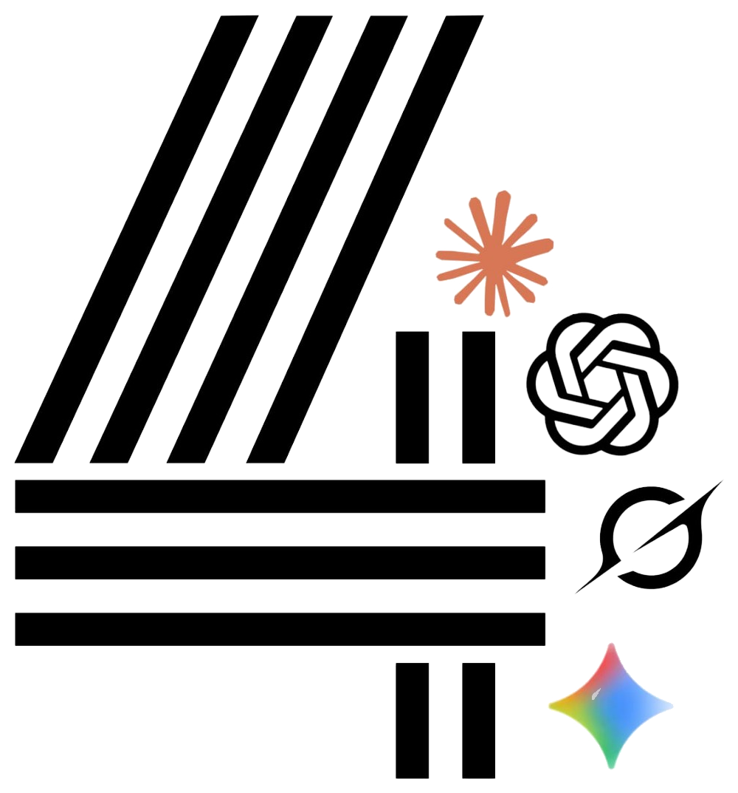

Подключите нужные нейросети. Каждый ключ проверяется отдельно, а временный сбой не отключает остальные узлы.
Ключи хранятся в localStorage этого браузера. Для безопасности не публикуйте их и не отправляйте вместе с файлами проекта.
Каждый провайдер проверяется независимо.